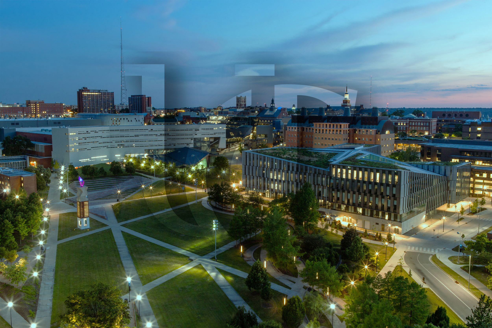

After my first year I didn't have high expectations for my second year of College. Even after being in college for a year I still felt like I was stuck in my senior year in high school, mostly due to the virtual environment. Looking back I now recognize that it stunted my growth as a person. But with COVID cases and restrictions going down this year, more in person opportunities on and off campus opened up as the time went on. Compared to my first year, my second year ended up being a lot more adventurous and fun!
During the first semester of my 2nd year I started my first Co-op at GEA! The Co-op was hybrid but I only had to go in a total of 3 times due to COVID restrictions. My Co-op was based in Louiville but I was physically in Cincinnati for my rotation, as a Software Engineering co-op most of the engineers were already used to the virtual environment. Overall though I learned a lot about the current work culture in software Engineering and a lot about myself and what I'm interested in now that I understand what it means to be a Computer Engineer. By the end of my rotation I ended up changing my major from Computer Engineering to Computer Science. Going into college I was very certain I knew what I wanted to do but after my first co-op experience I realized that Computer Engineers don't have the most exciting jobs, especially with the way the industry is heading.
While around campus in my off campus housing my first semester I was able to attend in person Student Government every Thursday where I was the acting Web Director. I was able to incorporate the skills I learned my previous year as a tribunal intern in technology at my position in Student Government. Before the semester started I was able to transfer the SG website to the uc.edu domain from their previous squarespace domain. The SG experience was exciting and allowed me to meet a lot of new people around campus and get my name out there for when I run for SAL!
Over the course of my second semester I was able to dedicate more time to my Turner mentee but consequentially spent less time with Student Government. Since my Data Structures class directly went over my SG meetings I wasn't able to spend nearly as much time as I use to spend their anyway. But since I started to take some of the weed out classes like data structures I decided to really focus on improving myself and making sure this is the correct major I wanted since I recently switched once already. This is the semester I started to work out with my mentee every Monday, Wednesday, and Friday. And I spent a lot of time with my mentee to make sure this is the major he wanted to go into, while also helping him study for Calc 2 by making practice tests.
Going forward I've recognized that the future is uncertain and that I am going to change as I discover more of the world. All I can do for myself right now is explore the world and my interest. In reference to my goals for the first year I got into the International Co-op program and am looking forward to teaching myself elementary Japanese over the summer in preparation for it! And I was able to get my GPA up to a high 3.4, so not exactly a 3.6 but I'm on track!
Compared to my first year at UC I had a spectacular experience and made significant progress in my roadmap I made in Gateway to Honors! As Covid restrictions start to die down and the world acclimates to the new changes brought on due to the pandemic I'm excited to dive in head first and achieve my goals.
“Be the change you want to see in the world." - Mahatma Gandhi
